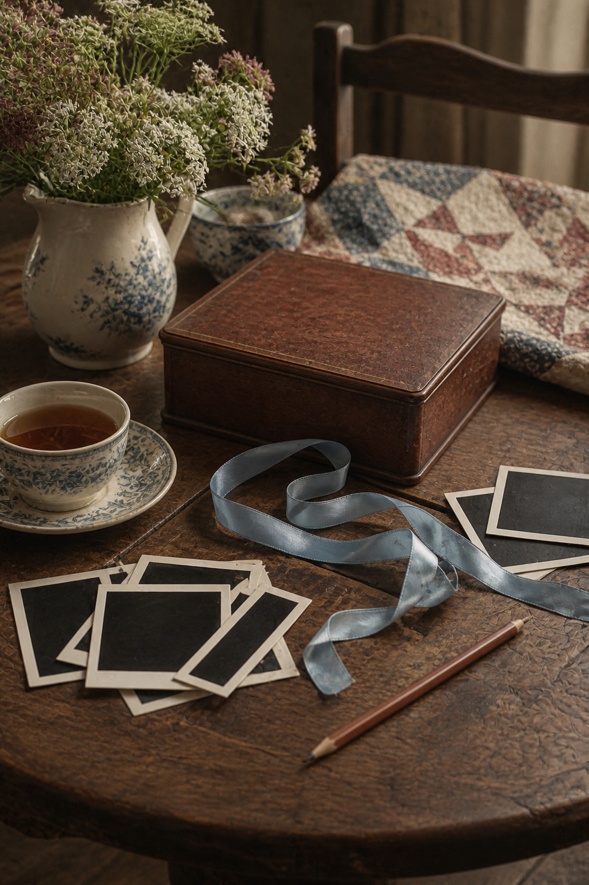
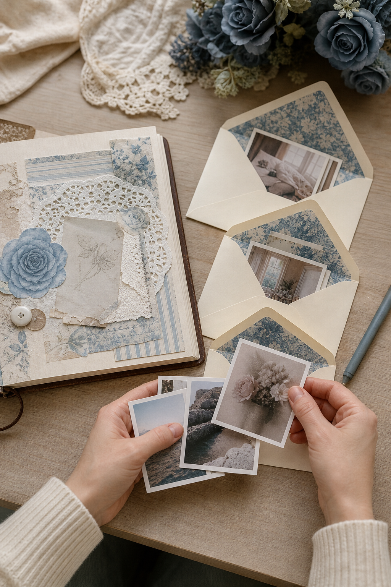

A box of unsorted photographs can make scrapbooking feel like unfinished work. The kinder approach is to stop treating the backlog as one project. You only need a small group of images and one story at a time.

Choose a feeling, not a year
Instead of starting with the oldest photograph, pull images connected by a simple feeling: slow mornings, birthdays at home, people in gardens, or ordinary kitchens. Emotional groups are easier to work with than strict chronology.
Limit the first session
Set aside six photographs and return the rest to the box. Choose one for a full page, two or three for a pocket, and place any uncertain images in a separate envelope. A visible stopping point prevents the session from becoming sorting work.
Keep imperfect photographs
A blurred picture may hold the only record of a gesture, room, or person. Use it small, pair it with writing, or tuck it inside an envelope. Technical quality matters less than the memory the image can recover.

Write before you decorate
On scrap paper, note the names, approximate date, place, and one detail the photograph does not show. This protects the information even if the layout is finished later. It also reveals which image carries the strongest story.
Use a repeatable page recipe
Try one photograph, one broad paper mat, one narrow strip, a date, and a short paragraph. Repeating a dependable structure saves creative energy. Change colors and textures while keeping the underlying recipe familiar.
Make pockets for groups
When several photographs belong together but do not need individual layouts, create a generous pocket and place the best image on the front. Add the others inside with a single shared note. The archive remains accessible without filling many pages.
Measure progress by stories saved
Finishing one honest page is progress even when hundreds of photographs remain. Date the session and close the box. Returning with curiosity is more valuable than forcing yourself through an artificial completion target.
Your backlog does not need to disappear. It only needs to become a source you can approach without dread, one small group and one remembered detail at a time.
Image note: Some visuals in this article were created with AI and curated by Sentimentalica.